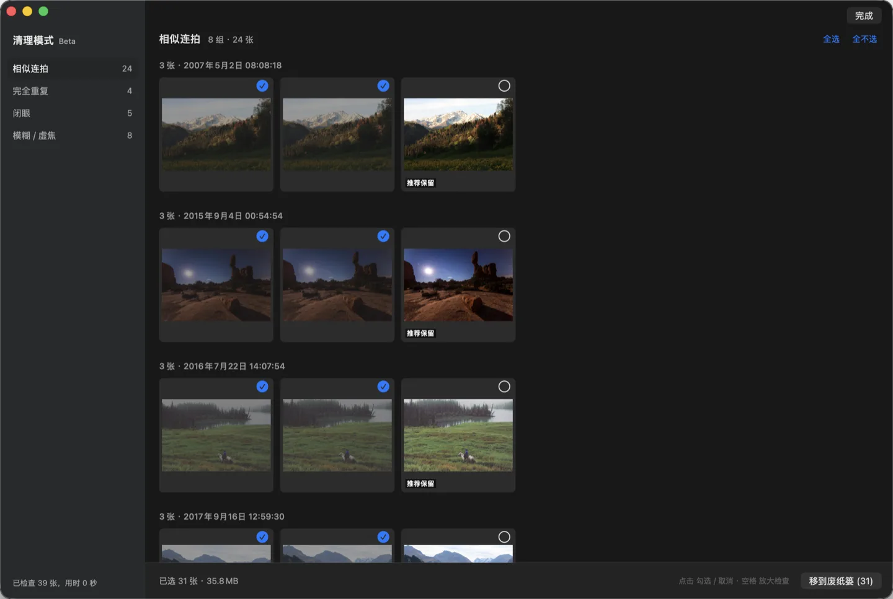
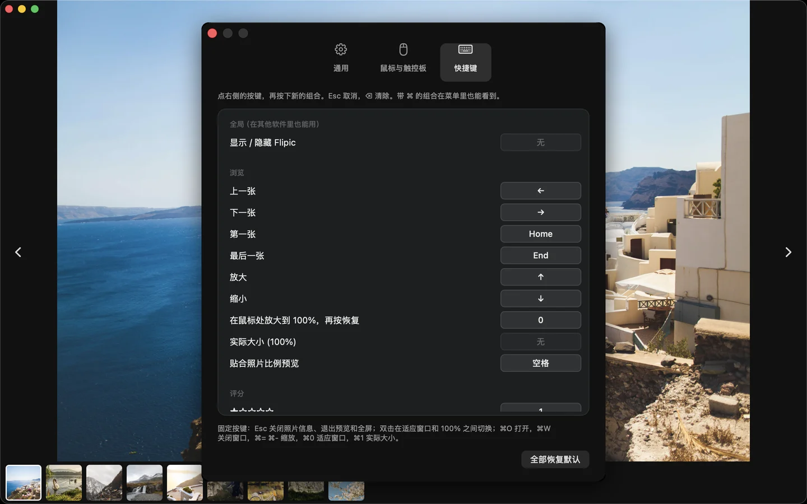

Mac 看图软件
双击一张图，
左右键翻完整个文件夹
Flipic 只管看图这一件事。打开照片、往下翻、放大看细节，按键和手感照着 Windows 上顺手的看图软件来做。
- macOS 13 或更新版本
- Apple 芯片与 Intel 通用
- 安装包 1.8 MB
- 已通过 Apple 公证
Flipic 是 Mac 软件，手机上装不了。复制下面的链接，在 Mac 的浏览器里打开就能下载。

Mac 上怎么看下一张图片
用系统自带的预览只打开一张图时，它就只显示这一张。想往下翻，得先回访达把一整组图片全选，再一起打开。
Flipic 里双击任意一张，按 → 就是下一张，同一个文件夹的图片都能翻到。可以按文件名、拍摄时间、修改时间、创建时间或文件大小排序，会记住你上次选的方式。
按空格，窗口会贴合照片的比例，整张图铺满窗口，跟访达里按空格预览一样；预览时照样能左右翻，再按一次空格回到原来的窗口。
翻页前后几张会提前在后台准备好，4800 万像素的照片连着翻也跟得上。

放大看细节，跟着手指走
鼠标停在想看的地方，按 0 就在那里放大到 100%，再按一次恢复。触控板双指捏合时，缩放跟着手指走，松开有回弹；鼠标滚轮也能以光标为中心缩放。习惯用滚轮翻页的，在设置（⌘,）里改一下就行；用 Mos 改过滚轮方向的，缩放方向也能反过来。
双击在适应窗口和 100% 之间切换。平时只解码适合屏幕的尺寸，放大到看得出差别时才换成原图，所以内存占用不高。

平时只有照片，想看参数按 I
界面默认不显示任何信息，只有照片本身。
按 I 在右上角打开照片信息：相机、镜头、快门、光圈、ISO、拍摄时间、尺寸、色彩描述和文件大小，按 Esc 关掉。

活动照片太多，先把废片挑出来
会议、活动一拍就是几百张，找能用的那几张很费时间。按 ⇧⌘K 进入清理模式（Beta），Flipic 会在本机检查整个文件夹，分成四类：相似连拍、内容完全相同的文件、闭眼、模糊或虚焦。
连拍里会推荐保留最清楚、没人闭眼的那张，其余默认勾上；闭眼的照片会框出是哪张脸。空格放大检查，点一下取消勾选。只有你按下「移到废纸篓」才会删除，⌘Z 可以撤销。RAW 和同名 JPG 一起处理。

打星、改键，按你的习惯来
按 1 到 5 给照片打星，评过分的照片在底部正中一直显示星级，右键菜单里可以取消。评分按 XMP 标准写入，Lightroom、Bridge、Capture One 都能读到：JPEG、HEIC 只改元数据不重新压缩，专有 RAW 写在同名 .xmp 文件里，原始文件不动。
所有设置收在一个窗口里（⌘,），快捷键都能自己改。还可以录一个全局快捷键，在 Photoshop 里按一下 Flipic 就出来，再按一下收回去。设为默认看图软件也只要点一下。

HEIC 批量转 JPG
iPhone 拍的 HEIC 照片发给别人打不开，一张张转太慢。Flipic 可以把整个文件夹一次转完，转好的放进子文件夹，原图不动。
- 打开要转换的文件夹
- 菜单「工具」里选「批量转换格式」，或按 ⇧⌘C
- 选 JPEG、PNG 或 HEIC，拖动滑杆调质量

- 支持格式
- JPEG、PNG、HEIC、WebP、GIF 动图、TIFF、AVIF、JPEG XL（需 macOS 14 或更新），以及常见相机 RAW
- 其他功能
- HDR 照片按 HDR 显示（设置里打开）、幻灯片渐变时长可调、1 到 5 星评分（XMP，Lightroom 能读）、全局快捷键显示 / 隐藏、快捷键自定义、⌘E 把当前照片交给 Photoshop、Lightroom 等后期软件（有同名 RAW 时打开 RAW）、旋转后写回文件（JPEG、HEIC 只改方向标记，画质无损）、导出压缩副本、批量重命名、幻灯片放映（每张 1 到 10 秒可选）、设为桌面壁纸
- 界面语言
- 14 种，跟随系统设置
- 隐私
- 默认不联网，没有账号，不收集任何数据。只读取你打开的图片，处理都在本机完成。检查更新只在你手动点或在设置里打开时才进行，只请求一个版本号。
- 开源
- MIT 协议，代码在 GitHub，可以自己查，也可以自己编译。
| ← → | 上一张 / 下一张 |
| ↑ ↓ 或滚轮 | 放大 / 缩小（滚轮可改成翻页） |
| 空格 | 窗口贴合图片比例预览 |
| 0 | 在鼠标位置放大到 100%，再按恢复 |
| 双击 | 适应窗口和 100% 来回切 |
| I | 照片信息 |
| T | 缩略图栏 |
| R / L | 向右 / 向左旋转 |
| S | 幻灯片放映 |
| 回车 | 重命名 |
| ⌘S | 导出压缩副本 |
| ⌘⌫ | 移到废纸篓 |
| ⌘E | 在后期软件中编辑 |
| ⇧⌘K | 清理模式 Beta |
| 1–5 | 打 1 到 5 星 |
| ⌘, | 设置，快捷键都能改 |
常见问题
收费吗？
免费，没有内购，没有广告，也不需要注册账号。
从网上下载的安全吗？
安装包用 Developer ID 签名，并通过了 Apple 公证，macOS 会在安装时自动校验。Flipic 默认不联网，不收集任何数据。
第一次打开提示「从互联网下载」，怎么办？
这是所有网上下载的 App 第一次打开时都会有的提示，点「打开」即可，之后不会再问。
怎么设为默认看图软件？
打开设置（⌘,），在「通用」里点「设为默认看图软件」，常见图片格式和相机 RAW 一次设好。也可以在访达里右键一张图片，按住 ⌥ 键，选「始终以此方式打开」› Flipic。
Intel 芯片的 Mac 能用吗？
能。Flipic 同时支持 Apple 芯片和 Intel 芯片，需要 macOS 13 或更新版本。
用着不顺手，去哪反馈？
在 GitHub Issues 里留言，我会接着改。